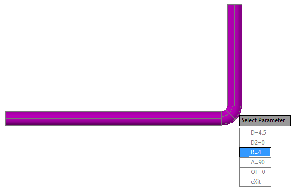

The sample illustrates how to use high-level APIs to create, route, connect, and substitute piping components. You can also set parameters for parametric components.
The high-level APIs are implemented by the managed classes AutoRoute, BentPipe, BranchWrapper, ConnectionMode, ConnectorWrapper, CutbackElbow, ElbowPart, ElbowWrapper, LockEntity, ParametricPart, PipePart, PipeWrapper, ReducerWrapper, and RoutingHelper in Autodesk.ProcessPower.PnP3dPipeRouting.
NETLOAD PipeRouting PipeRoute 0,0,0 specification CS300 size 4" 72,0,0 72,36,0

The FittingEdit sample command shows you how you specify dimensions for parametric parts.
In the sample, the PipeRoute command runs the following code:
try
{
using (AutoRoute ar = new AutoRoute (m_LastPair, m_SnapPair,
m_Spec, m_Size, m_CurrentPipe, m_ElbowParts,
m_bStubin, m_bCutbackElbow, m_bBentPipe))
{
if (ar.PathCount == 0)
{
return false;
}
else
if (ar.PathCount == 1)
{
// Single path. Just accept it
//
ar.CurrentPath = 0;
}
else
{
// Select path with preview
//
PromptKeywordOptions opts = new PromptKeywordOptions("");
opts.Keywords.Add("Accept");
opts.Keywords.Add("Next");
opts.Keywords.Add("Previous");
opts.Keywords.Add("Undo");
opts.Keywords.Default = "Accept";
int idx = 0;
while (true)
{
opts.Message = "\nConnect or preview next solution " + (idx+1).ToString() + " of " + ar.PathCount.ToString();
ar.CurrentPath = idx;
ar.Preview();
PromptResult pRes = ed.GetKeywords(opts);
if (pRes.Status != PromptStatus.OK || pRes.StringResult == "Undo")
{
bCancelled = true;
break;
}
else
if (pRes.StringResult == "Accept")
{
break;
}
else
if (pRes.StringResult == "Next")
{
idx++;
if (idx == ar.PathCount)
{
idx = 0;
}
opts.Keywords.Default = "Next";
}
else
if (pRes.StringResult == "Previous")
{
idx--;
if (idx < 0 )
{
idx = ar.PathCount-1;
}
opts.Keywords.Default = "Previous";
}
}
ar.EndPreview();
}
if (bCancelled)
{
return false;
}
else
{
// Append
//
if (m_GroupId < 0)
{
m_GroupId = PnP3dTagFormat.findOrCreateNewLineGroup(m_LineNumber);
}
ar.Append(m_GroupId);
return true;
}
}
}Developers can route piping similar to plantpipeadd, including the ability to choose from multiple routing solutions.
See readme.txt in the project sample for details.